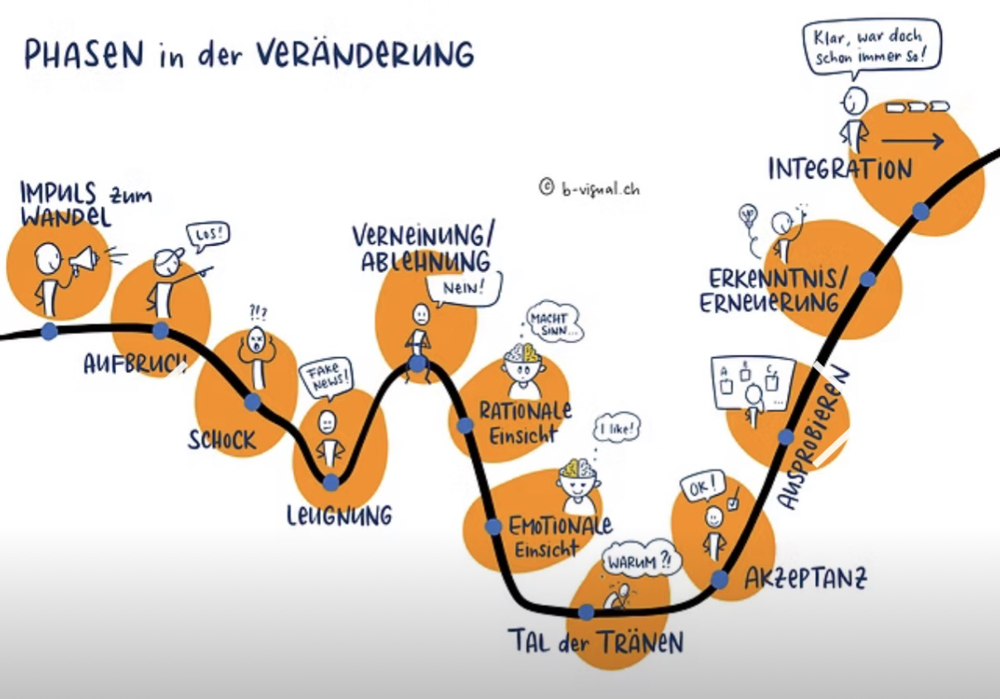

Phasen in der Veränderung — interaktiv
Klicke auf einen blauen Punkt, um mehr zur jeweiligen Phase zu erfahren.

✕
Schritt 1
Titel
Dein Text hier …
Maßnahmen für Führungskräfte
← Vorherige Phase
Nächste Phase →